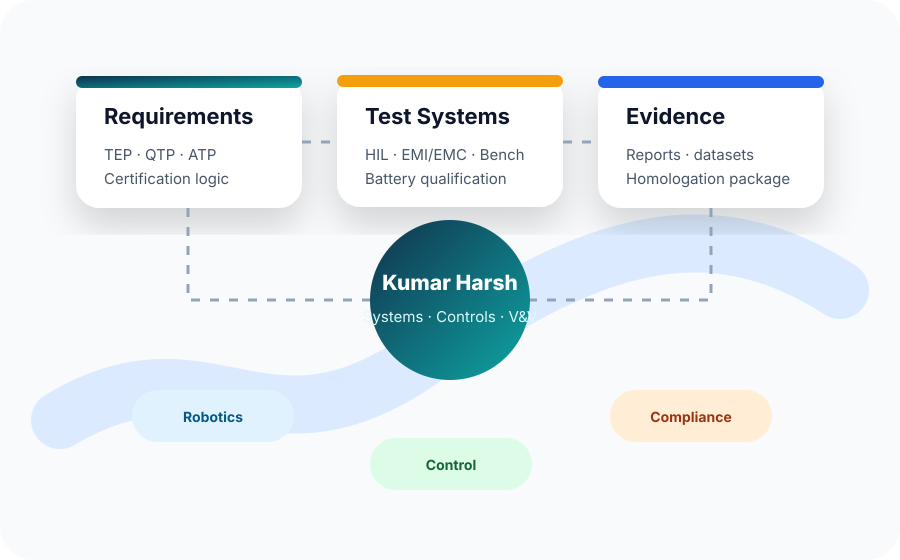
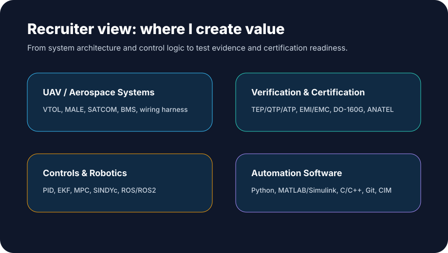
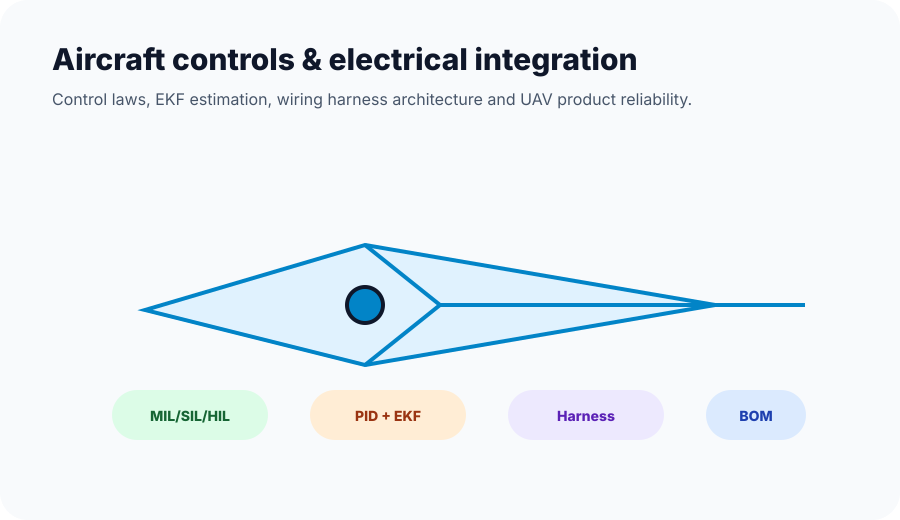

Robotics System Engineer · UAV/UAS Systems · Certification & Compliance
Engineering reliable autonomous aviation systems from concept to certification evidence.
I am Kumar Harsh, a systems engineer focused on UAV/UAS verification, battery qualification, EMI/EMC compliance, flight controls, robotics, smart grid automation and safety-critical test documentation.
Positioning
A recruiter-friendly engineering profile
I combine hands-on test engineering with control-system thinking and certification discipline. That means I can build the bench, write the procedure, run the tests, analyze the data and turn results into evidence that engineering and compliance teams can use.


What I bring
Strong fit for roles in systems testing, UAV validation, robotics controls and certification engineering.
Systems testing: battery qualification, HIL, EMI/EMC, SATCOM, lighting systems, acceptance procedures and test reporting.
Controls & robotics: PID, EKF, MPC, SINDYc, ROS/ROS2, Crazyflie/Crazyswarm, NAO, RoboMaster and sensor fusion.
Aerospace integration: UAV/VTOL/MALE aircraft, BMS, BLDC motor selection, wiring harness, LRU interfaces, BOM and architecture design.
Software tooling: Python, MATLAB/Simulink, C/C++, Git/GitLab, DOORS, SAP, AutoCAD Electrical, Autodesk Inventor and IEC automation workflows.
Featured case studies
Selected work, explained like engineering stories
Each project page opens separately and gives a summarized, public-safe explanation of the challenge, approach, tools and outcome.

Master Thesis
SINDYc for Model Predictive Control on evoBot
Nonlinear system identification and control using Sparse Identification of Nonlinear Dynamics for MPC. Thesis grade: 1.7.
Read case study →
UAV Testing
Battery qualification and dummy-battery architecture
Qualification bench setup, destructive-test strategy, SoC threshold mapping and certification-ready verification evidence.
Read case study →
Aircraft Design
UAV control laws, EKF and electrical integration
Autopilot control laws, PID tuning, EKF estimation, wiring harness design and UAV reliability improvement.
Read case study →Recruiter CTA
Looking for a systems engineer who understands both the aircraft and the evidence behind it?
I am reachable by email, German phone and Indian phone. I can share additional public-safe project details or reports on request.